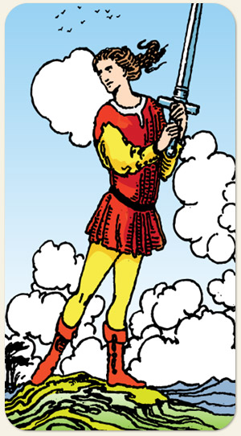

Todo pajem traz consigo o elemento terra, ou seja, todo pajem, é a materialização do elemento. É o ar puro e materializado, um rapaz esguio portando uma espada como se estivesse treinando, traz consigo imaturidade no sentido de: ainda não tem filtro, a apesar de já possuir inteligência, mas ainda não sabe onde aplicá-la.
Positivo: Pessoa inteligente, meio elegante, meio almofadinha, tende a se relacionar bem com as pessoas, tem fortes habilidades sociais. O sentido positivo do Elemento Ar traz inspiração.
Negativo: O vento que traz o cisco no seu olho, fala o que pensa, aponta o dedo sem ter provas, é a intriga, a fofoca, o excesso de informação superficial e sem aprofundamento, falta de elegância, falsa elegância, pouca empatia, rigidez cognitiva.
Símbolos: A postura ativa do Pajem, Espada sendo segurada com as duas mãos, Espada em Riste, Pássaros, Árvores, Cabelos ao Vento, Grandes Nuvens, Terreno Elevado, Terreno Irregular.
Cores: Cor, Cor, Cor, Cor.